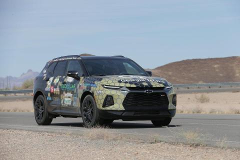

EcoCAR EV Challenge — Connected & Automated Vehicles
Contributing to the final year refinement of Level 2 autonomous systems for a 2023 Cadillac LYRIQ as part of a four-year national collegiate competition.
Project Overview
The EcoCAR EV Challenge is a prestigious four-year national collegiate competition sponsored by the U.S. Department of Energy and General Motors. Georgia Tech's team is tasked with re-engineering a 2023 Cadillac LYRIQ to integrate advanced propulsion systems, connected vehicle technologies, and SAE Level 2 automated driving features. As a member of the Connected and Automated Vehicles (CAVs) subteam within the Vertically Integrated Projects (VIP) program, I contribute to the final year of competition refinement.
The challenge brings together students from multiple engineering disciplines — mechanical, electrical, computer, and software — to work on a real vehicle platform with industry-grade tools and processes. This mirrors the collaborative, cross-functional environment of a professional automotive engineering team.
Technical Contributions
My primary focus is on developing longitudinal and lateral control algorithms for automated driving features using MATLAB and Simulink. Longitudinal control governs acceleration and braking behavior, while lateral control manages steering inputs — both critical for safe and smooth autonomous operation. These algorithms must account for real-world variables like road curvature, vehicle speed, and sensor latency.
I also assist in processing and interpreting data from the vehicle's sensor suite, which includes LiDAR, radar, and cameras. Object detection accuracy is paramount for autonomous systems, and I contribute to testing and refining the perception pipeline that fuses data from these multiple sensor modalities into a coherent understanding of the vehicle's environment.
Beyond individual technical work, I collaborate with multidisciplinary subteams to ensure that the CAVs systems integrate seamlessly with the vehicle's energy-optimal path planning algorithms and overall safety architecture. Communication across subteams — propulsion, controls, cybersecurity, and CAVs — is essential for the competition's success.
Skills & Takeaways
- Gaining hands-on experience with MATLAB/Simulink in a real-world autonomous vehicle context
- Working with industry-standard sensor technologies: LiDAR, radar, and camera fusion
- Developing control systems for longitudinal and lateral vehicle automation
- Collaborating across disciplines in a structure that mirrors professional engineering teams
- Learning to iterate under competition deadlines with real safety constraints